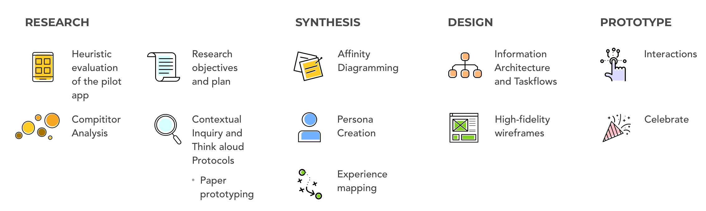
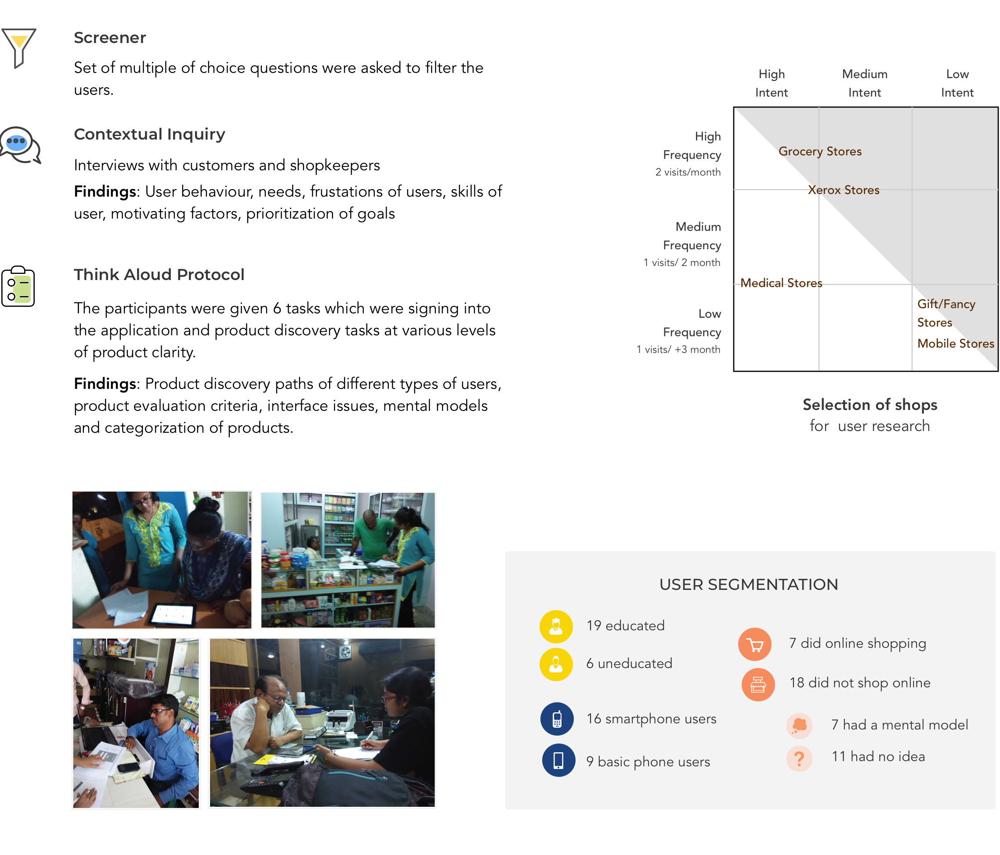
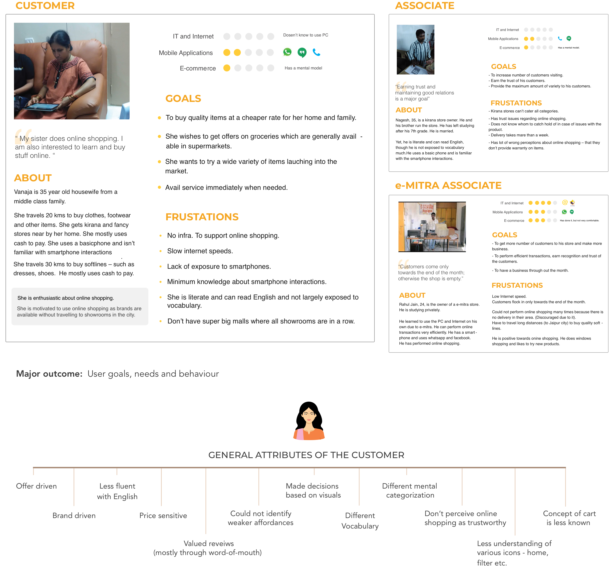
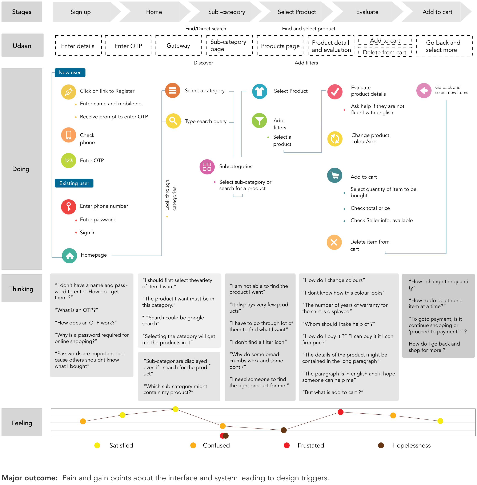
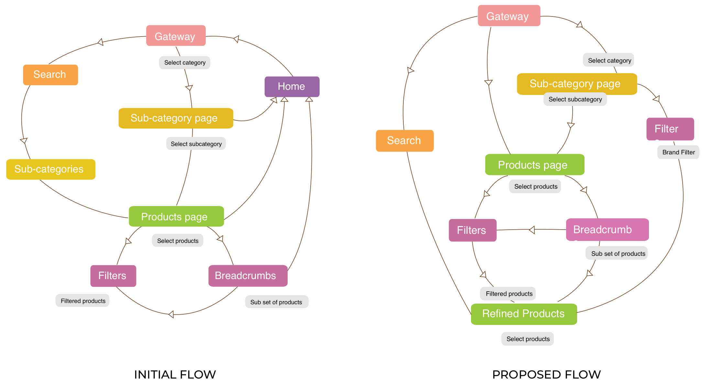

The project was carried out as a part of my UX Design Internship at Amazon. I worked majorly on the product discovery and product evaluation flows of the product. Details of the product are omitted due to a Non-Disclosure Agreement.
The mission of the product is to enable everybody in India to buy from Amazon. The initiative aims to remove the transaction barriers due to language, access, education and payment methods. Udaan also aims to bridge the trust gap as the customers rely on a fully-assisted shopping model.
Udaan is a program that will place tablet devices loaded with the Udaan-Amazon app at the retail points in tier 3+ towns in India. The customers walking into the store will order products through the tablet application and pick them up from the store once delivered.
'Find' and 'Discover' is a very important stage in the conversion funnel and conversions can be increased by making this stage effective for the user. Hence, I primarily focussed improving the product discovery and product evaluation paths of the product.
Vision of the product - Udaan
The New intiatives team consisted of the Head of Marketing, 5 product managers, a design mentor and myself, as a UX designer.
I began by understanding the assisted shopping model of Amazon and its users by reading product specifications and discussions with product managers. I inspected the first pilot version of the product against the 10 Nielson Heuristics.
After identifying similar products, I evaluated product discovery, product evaluation paths and benchmarked standards.
I conducted contextual interviews, and made 4 user personas for the product. User needs and goals were evaluated. I also generated several sample use cases for the product.
Based on user interviews, I made Personas.
Based on user interviews, I made Personas.
Based on user interviews, I made Personas.
I ideated on new and changed product features. I presented these and went through two rounds of critique for these ideas. I further iterated features after each round. New task-flows were generated for each use case identified.
I marked breakpoints in these task flows, where existing tools failed to meet the user needs.I paper-prototyped these ideas, and tested them with users. I conducted think-aloud sessions with these low-fidelity prototypes and iterated on them. I created high fidelity clickable wireframes and tested them with users. Based on test findings, I made changes in every successive iteration. I iterated through 3 rounds of wireframes. I delivered a full UX specification document with wireframes, layouts and mock-ups.
No final product details or names are included here due to a Non-Disclosure Agreement.
I learned the User Centered Design methodology followed at Amazon, that I find useful to refer back to in my work. I learned working directly, and communicating seamlessly with developers. I learned periodic work presentation for critique sessions. The biggest challenge for the project was gaining access to users for contextual interviews.
I was guided by an amazing mentor, who taught me a great deal about the product based industry, as well as designing desktop products. I was given a full-time employment opportunity at Amazon at the completion of my internship.